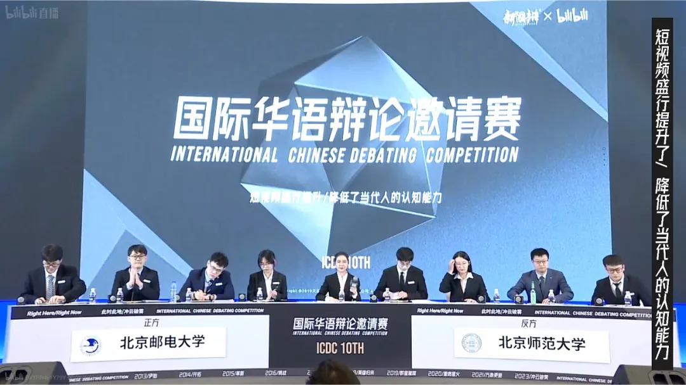
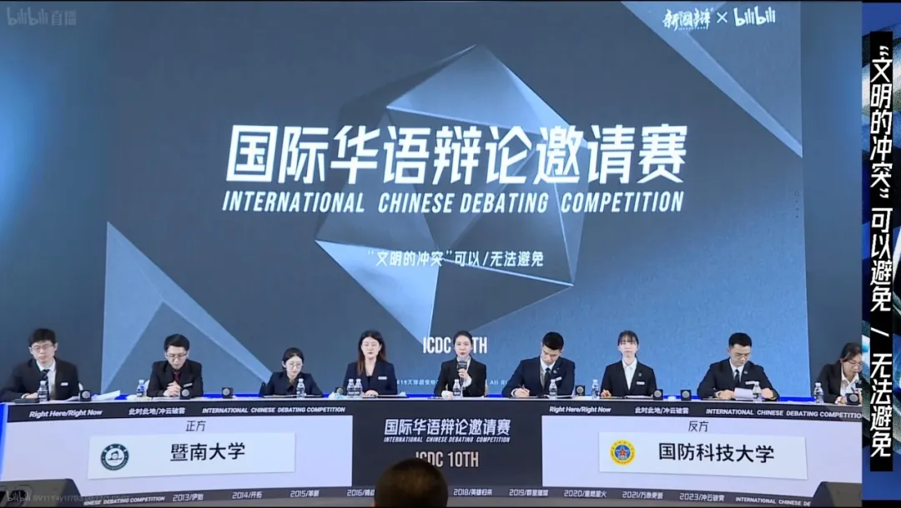

这周在上海看新国辩，两天小组赛深深震撼于恢复线下比赛后的第一届新国辩的比赛质量之高，也隐约察觉在赛场下暗流涌动的风格、技术、判准乃至辩论审美的转变，在比赛日全部结束后，我会梳理我对本届新国辩的全部理解形成单独的观赛笔记。
而现在，我只简单记录几个这几天听到的有所感悟的散点，作备忘之用的同时借还在新国辩会场的机会，趁热请各位指导一下这些对比赛的思考。具体内容是关于两场比赛的两个环节。
事先声明的是，选择的比赛和环节是引发我个人共鸣的片段，而非必然代表我对核心战场的理解。这两场比赛无一不是我认为精彩的名局，对其中一些攻防选择的讨论并非质疑，临场而言，我并不能比这些我喜爱和尊敬的辩手们做的更好了。
一 . 北邮VS北师 短视频盛行提升了/降低了当代人的认知水平
在反三的个人环节及自由辩环节，反方将比赛讨论的焦点导向短视频平台特征带来的观点极化，进而推导至情绪化、不理性、缺乏思考，试图借此回扣反方"认知需要思考"的标准，论证"认知的思考过程"在短视频中缺位导致了系统性思考、长时间专注等能力的降低。
正方对这个攻防的早期回应尝试是拉回信息茧房等原始论点，用破除信息茧房的机制证明人们会看到更多元而非更单一的论点。但反方三辩明确承认自己并非打算论证观点单一，而是观点极化，这让正方陷入了必须正面回应情绪化和不理性的局面。
对自由辩，正方四辩的处理大致如下。
首先，用三十秒左右回溯己方前场提到的"能力转化说"，指出反方主张的"系统性思考能力"降低是合理的能力重点转化，是符合现代人需求的。
然后，用一分三十秒正面处理情绪化，借鉴"理解需要/不需要共情"，指出情绪化恰恰是深刻理解社会议题的必要条件，情绪不天然是理性和思考的敌人，并举出一部分社会热点议题的例子加以佐证。
最后三十秒，以"真实"为价值收束，强调短视频下放表达权利，让所有人都成为可以发声的创作者，进而把我们的眼睛与他人的镜头相连接，看到更真实的社会。
对这个结辩内容选择，我认为有以下三点错误。
第一，"能力转化说"是攻防一体的好口径，但不是正方的真实底线。论证能力转化进而延展至更符合当代需要，既能推进正方论证，也能回应反方对部分能力降低的论证，效率是足够高的。但问题在于，正方自身立场证成的真实底线只需要"极小的能力提升"。因此，在开始结辩前攻防落后的情况下，我认为已经是时候抛弃这层口径，直接退守底线利好，即使不美观，但胜在足够直接的向评委展现正方论证的效力。
因此，对第一个问题，我认为可能更优的讲法类似于——
"中国乡镇绝大多数人的真实生活是为劳动填满的，没有长时间专注，也不需要系统性思考，全中国最精准最权威的中老年人健康追踪调查CHARLS的认知能力测评量表仅仅是基本的找规律和十秒钟内的汉语单词记忆，离反方三辩期待的那个'在学校里，教授和博士一起探讨社会议题'的场景相去甚远。对他们而言，为本就遥不可及的能力而叹息没有意义，反而是任何一点细小的提升都弥足珍贵。最起码，短视频让他们跟上现代社会，这就足够了。"
第二，对情绪化和不理性的这种处理方式是过度冒险的，且已经脱离己方核心战场。我承认，借助反方的情绪化，直接诠释情绪化本身对认知有正向作用很可能是收益最大的打法，一旦证成，就变成借反方的力推自己的论。但问题在于，对于逆风局后手结辩而言，开一个高论证义务的新点是冒险的，尤其是这个点并不在己方核心论点的范围内。
即使有"理解需要共情"的先例可以借鉴，我认为正方四辩的诠释依然显得相对单薄，顶多算是描述了一种反向的机制的存在，而我认为，这种收益对于逆风局结辩等于没有意义。
第三，"能看到真实"的价值是和攻防存在一定程度的脱节的。在本场比赛中，反方对真实的核心质疑是"也能看到谣言和刻板印象"，因此，如果是回应这个攻防，只讲到"能看到真实"在逻辑上没有意义。而如果是为了推进己方的论证，"能看到真实"必须与"看到就能提升认知"相结合才有效果。问题在于，我的场判是，这场比赛正方劣势的核心战场正是没有拿下"看到就能提升认知"的判断。因此即使一定要在这套框架内选择价值，我认为重点也应在解释这个部分。
因此，对于第二和第三个问题，我认为更优的讲法可能类似于——
"其实反方忽略了真正意义上大部分的人类认知成长，绝不是在学院里教授和博士间的讨论，因为真正系统化的培养知识分子也不过近几百年，而且受高等教育者也仅占极低的比例，而是那些在生活中积累的阅历所带来的对现实生活和世界规律的认知。"
"《百年孤独》里，老祖母乌尔苏拉作为一个传统妇女，在将近百年的时间里从未离开马孔多，甚至几乎不离开她的院子，更从来没有任何政府的、教会的教授传授过她任何知识，她只是看。吉普赛人到来的时候，她在看；独裁者控制的时候，她在看；上校革命的时候，她在看；代表资本主义的香蕉种植公司开到的时候，她在看；马孔多在下雨的时候，她在看，一直到马孔多通了船和火车，从那个她当年创立的村子，变成举足轻重的城市，她始终保持沉默的观看态度。"
"但事实是，没有任何人能否认乌尔苏拉对世界的认知能力，对于正义、善良这些我们辩手天天提及的价值时，她的理解比任何人都深刻，即使对于复杂多变的政局，乌尔苏拉对权力斗争、保守党和革命党、土著和外国人的理解总是最通透的。"
"因为从本质上说，人类绝大多数的认知，都不是在看见的那一瞬间就完成思考的，而是像乌尔苏拉一样，在漫长的岁月里被不断反刍、沉淀而形成的人生智慧，或者换个更常见的叫法，阅历。这就是短视频让我们看到的意义，我丝毫不担忧反方描述的'信息过载'，因为那不过是快速积累大量阅历的过程，这个时代的我们正在借助短视频，在一年里看到古人一生所看到的一切，这就已经是对认知能力最大的提升了。"
我怀疑，真正贴合正方立场的古训不是"书读百遍，其义自见"，而是"家有一老，如有一宝"。
我认为上面这个讲法更优的另外一个理由其实是，我感觉当对手在任何一组对举的价值的某个立场上取得优势，我只有站在完全相反的立场，才有可能起码让评委感觉"双方对此各有诠释"，而非绝对的证成度差异。
在这个题里，当反方三辩已经牢牢抓住"学院、学术、专业"这种立场，为观众构建起学理意义上对现代人思维能力的终极期待，正方结辩能做的只有回归常识、回归大众，这也是在对第一个问题的回应上，我认为拉回普通劳动人民的生存现状是更好的选择的原因之一。
二 . 暨大VS国科 文明的冲突可以/不可以避免
在正三质询反二的环节，对中美贸易战的冲突逻辑做了这样两层在我看来是偷换的逻辑攻击——
"在菜市场和卖菜大妈讨价还价算不算冲突？"
"国家都有贸易的排序和选择，某一种商品不贸易就是冲突？"
没有被直接表述出来的一层意思是，不允许强买强卖就是冲突？
反方二辩在这里的处理是，强调芯片是高端科技，作为贸易商品的特殊性和重要性。
问题在于，制裁逻辑与直观感受恰恰相反，尤其是在正方类比到强买强卖的时候，贸易保护领域越高端，越正常，相反，制裁领域越低端，才代表制裁程度越高。
对中国只制裁尖端科技，对俄罗斯连民生物资也全面封锁，哪个的冲突等级更严重？
因此我认为，在这个攻防上，强调芯片的高端科技属性恰恰是把观众的心证推向正方，更值得被强调的是芯片在民生领域的重要性。
举个例子来说，《射雕英雄传》里，玉阳子王处一身中毒砂掌，杨康为了害死王处一，命人将全城的对症药物都买走，等郭靖去买药的时候，竟然一味药材也找不到。
正方同学当然可以说，我只是合法的买药啊，药铺也只是没有药可以卖给你而已啊，但我们所有读者都知道，杨康就是在害人，抢购救命的药草，这里有明确的恶意，这就是冲突。
同样的，假设芯片是现代工业不可或缺的部分，是重要的生产资料，当美国就是明确地想让华为手机停产，想让中国企业倒闭，这里难道没有明确的恶意吗？难道还真能装糊涂说这都是贸易的选择吗？恐怕很难。
当然，我不否认贸易有选择的论点，中国出售高铁，是卖整车还是卖技术甚或连服务一起卖，卖多少技术，第几代技术，都可以排序，卖多少钱和卖给谁都可以谈判，这些可能确实没问题。
一个小小的偷换，和一个逻辑上的错误，已经把心证推向正方了，至少我当时的听感如此。